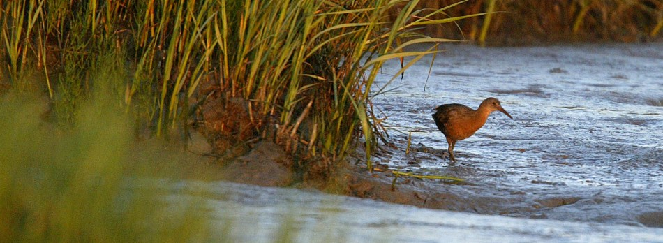

Alviso tides
CO-OPS station 9414551 · MLLW (ft)

South San Francisco Bay
A quiet companion for walking the levees — tides at Alviso, today’s forecast, seasonal birds, and a few species that make this place special.
CO-OPS station 9414551 · MLLW (ft)
NWS · ~37.46, −121.97
Don Edwards San Francisco Bay National Wildlife Refuge is the nation’s first urban national wildlife refuge — established in 1972 to protect the remaining tidal marshes, mudflats, and salt ponds of the South Bay. From Alviso to the Dumbarton Bridge, the refuge shelters migratory shorebirds, waterfowl, and endemic marsh wildlife in the middle of Silicon Valley.
Trails follow levees through pickleweed and open water. Bring binoculars, watch the tide, and give nesting birds room. Official FWS refuge page.
A good starting point is the Alviso area (Environmental Education Center and nearby levee trails in San Jose / Santa Clara County). Check hours, closures, and hunting calendars before you go — conditions change with restoration work and seasons.
9414551 (Alviso).